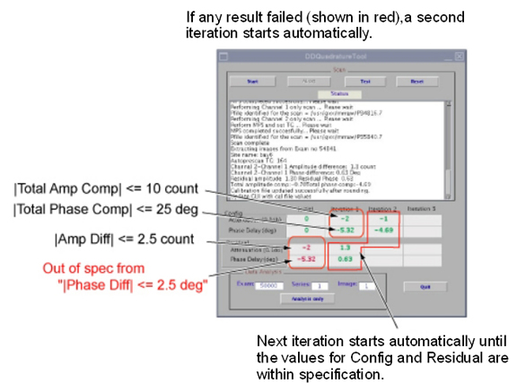

- 00000018WIA30B84E20GYZ
- id_131058603.1
- Sep 16, 2021 5:40:07 PM
Dual Drive Quadrature Tool
Prerequisites
| Required persons | Preliminary requirements | Procedure | Finalization |
|---|---|---|---|
| 1 | Not Applicable | 30 minutes | Not Applicable |
| Item | Quantity | Effectivity | Part number | Manufacturer |
|---|---|---|---|---|
| Body Loader with Sphere Phantom | 1 | - |
2371511 | - |
| GEM Coil Phantom Foam Support | 1 | flat tables only |
5404900 | - |
About this task
A dual drive system has two transmit channels. The DD (Dual Drive) Quadrature Tool is used to compensate for the amplitude and phase differences in the transmit channels. Amplitude and phase differences between the two channels can begin at the Exciter and be carried right up to the end of the imaging chain which is the body coil transmit. It can also be introduced at any of the intermediate passive components.
Dual Drive Quadrature Tool performs axial scans in three modes.
-
Combined mode
-
CH1 transmit, CH2 disabled
-
CH2 transmit, CH1 disabled
The Dual Drive Quadrature Tool calculates amplitude difference between CH1 and CH2 channel, and also calculates phase difference between CH1 and CH2 channel. It then updates the system calibration file with the cumulative compensation required.
Test mode without calibration is provided.


Procedure
- Open MR Service Desktop. Select Calibration tab, Dual Drive
Quadrature, and Click here to start this tool.Note:
The tool can be selected in either proprietary mode or non-proprietary mode. Figure 5 shows non-proprietary mode. For proprietary mode, select the tool from the Calibration Wizard.
Figure 5. Invoke Dual Drive Quadrature Tool (Non-Proprietary mode) 
To start the DD Quadrature Tool, click [Start] button for first iteration. Scan and analysis will start. It will take about 6 minutes.Notice Figure 6. Start Calibration  Note:
Note:If the phantom is off-center by more than 30 mm, the following message will be displayed. Set up the phantom again if this message is shown.

- After the first iteration is completed, the calibration result
will be pass or fail, as described below.
- If calibration is passed as in Figure 7, click [Quit] to complete the calibration. Go to Finalization. (1).
- If the calibration is failed at first iteration as in Figure 8, the next iteration will start automatically until the values are in specification until iteration 3.
Figure 7. Pass Case 
Figure 8. Fail Case at First Iteration 
Finalization
- Restore the phantom and cradle.
- Perform a body scan.